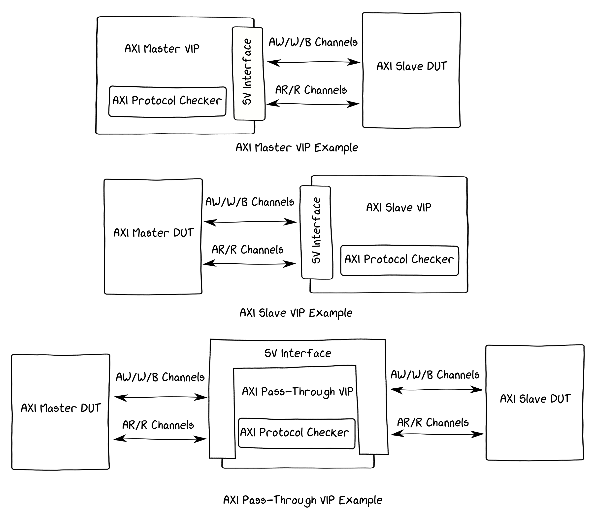

Xilinx AXI Verification IP
Posted on 24 Apr 2021 in Verification • 6 min read
Небольшой обзор Xilinx AXI Verification IP - набора инструментов для верификации систем, собранных на AXI шинах. Что в комплекте, как использовать, как симулировать в Vivado и вне, и как тестировать AXI Slave с помощью AXI Master VIP.
Общее описание
Инструмент позволяет решать следующие задачи:
- Генерировать траффик от AXI Master (при верификации AXI Slave)
- Потреблять траффик в качестве AXI Slave (при верификации AXI Master)
- Слушать обмен между Master и Slave и контроллировать корректность транзакций (соответствие стандарту)
Поддерживаются AXI3, AXI4, AXI-Lite.
Схематично это будет выглядеть так: 
{kind=link}
В первых двух случаях, кстати, контроль корректности протокола тоже выполняется. Проверки основаны на документе от ARM: AMBA 4 AXI4, AXI4-Lite, and AXI4-Stream Protocol Assertions User Guide. Там собран список утверждений, формально описывающих работу AXI шины.
Главный документ по VIP - это PG267 - AXI Verification IP v1.1 Product Guide (v1.1).
Кстати, описание AXI-Stream VIP находится в отдельном документе PG277 - AXI4-Stream Verification IP v1.1 Product Guide (v1.1).
Ну и сразу про исходники - они не зашифрованы, не обфусцированы. Открытый код на SystemVerilog с интенсивным использованием верификационного подмножества языка, т.е. не всякий симулятор подойдет - VIP заработают либо внутри Vivado, либо в дорогих коммерческих симуляторах типа Xcelium, Questa, VCS.
По этой ссылке можно скачать архив с исходниками всех VIP и документацией на API: AXI VIP, AXI Stream VIP, Clock VIP, Reset VIP sources + API documentation (2019.1)
Также исходники можно найти внутри Vivado:
$XILINX_DIR/Vivado/2019.2/data/xilinx_vip/hdl$XILINX_DIR/Vivado/2019.2/data/xilinx_vip/include
Ключевыми файлами являются axi_vip_pkg.sv и axi_vip_if.sv. Вся логика VIP утрамбована в первый из них. Всего-то 16к строк кода.
Собираем тестбенч для AXI Slave
Сделаем простой демонстрационный пример, где с помощью AXI Master VIP будем генерировать траффик в ведомый блок.
{kind=link}
Принцип работы несложен, и будет знаком всем, кто использовал SystemVerilog классы и интерфейсы при верификации. Создается инстанс интерфейса AXI, который одним концом подключается к тестируемому устройству (DUT), а другим заходит в виртуальный интерфейс т.н. агента - объекта класса, обслуживающего транзакции. Нам же остается лишь вызывать методы агента (таски) для запуска нужной транзакции и получения результата.
Есть несколько возможных путей для создания тестбенча:
- Описать полностью всё вручную: и инстанс VIP и тестбенч.
- Создать IP-ядро VIP блока в Vivado, а тестбенч описать вручную.
- Создать IP-ядро VIP блока в Vivado, а тестбенч сделать на основе примеров Vivado.
Я решил пойти вторым путем, т.к. придется немного полазить по исходникам и это должно быть полезно с точки зрения понимания принципов работы, однако, утомительную параметризацию доверить GUI.
Кстати, если кому интересен третий путь, то рекомендую посмотреть пост по ссылке: AXI Basics 2 - Simulating AXI interfaces with the AXI Verification IP (AXI VIP).
Итак, сначала сгенериуем AXI Master VIP с нужными параметрами:
- Создаем пустой RTL project в Vivado (у меня 2019.2) - без исходников и констрейнтов, и всё равно под какой чип. Называем проект, например,
axi_vip_proj. - Переходим в IP Catalog и ищем AXI Verification IP.
- Щелкаем по нему два раза и начинаем кастомизацию параметров. Какие параметры на что влияют можно найти в
PG267 Ch.2: Product Specification, а описание процесса кастомизации вPG267 Ch.4: Design Flow Steps. - Для тестового проекта будет достаточно оставить всё по умолчанию и лишь выбрать
INTERFACE MODE - MASTER. Ну и дать имя, скажем,axi_vip_master. Затем щелкаем OK, потом Generate.
Все артефакты генерации будут расположены внутри директории с проектом в axi_vip_proj.srcs/sources_1/ip/axi_vip_master.
Для симуляции нужны лишь несколько файлов из папок hdl и sim.
sim/axi_vip_master.svsim/axi_vip_master_pkg.svhdl/axi_vip_v1_1_vl_rfs.sv
По сути, это пара обёрток над интерфейсом VIP + некоторое количество констант.
Создаём файл тестбенча tb.sv.
В нём делаем некоторое количество алиасов для имён из пакета VIP мастера. Просто для удобства.
:::verilog
typedef axi_vip_master_pkg::axi_vip_master_mst_t axi_mst_agent_t;
localparam AXI_ADDR_W = axi_vip_master_pkg::axi_vip_master_VIP_ADDR_WIDTH;
localparam AXI_DATA_W = axi_vip_master_pkg::axi_vip_master_VIP_DATA_WIDTH;
Ну и добавляем остальные параметры AXI шины и создаём кастомные типы. По-хорошему надо всё это положить в отдельный пакет, но пока и так пойдёт.
localparam AXI_STRB_W = AXI_DATA_W / 8;
localparam AXI_BURST_W = 2;
localparam AXI_CACHE_W = 4;
//<---- code ----->
localparam AXI_SIZE_W = 3;
localparam AXI_RESP_W = 2;
typedef logic [AXI_ADDR_W-1:0] axi_addr_t;
typedef logic [AXI_DATA_W-1:0] axi_data_t;
//<---- code ----->
typedef logic [AXI_QOS_W-1:0] axi_qos_t;
typedef enum logic [AXI_BURST_W-1:0] {
//<---- code ----->
} axi_burst_t;
typedef enum logic [AXI_RESP_W-1:0] {
//<---- code ----->
} axi_resp_t;
typedef enum logic [AXI_SIZE_W-1:0] {
//<---- code ----->
} axi_size_t;
Теперь добавляем инстанс мастера - модуль расположен в файле axi_vip_master.sv, который был получен генерацией в Vivado. На самом деле, под несколькими слоями обёрток внутри там просто расположен инстанс интерфейса VIP из файла axi_vip_if.sv.
axi_vip_master axi_mst (
.aclk (aclk),
.aresetn (aresetn),
.m_axi_awaddr (axi_awaddr),
.m_axi_awlen (axi_awlen),
//<---- code ----->
.m_axi_rready (axi_rready)
);
Интерфейс уже есть, а значит остался только второй компонент - агент для управления. Объявляем объект, в initial вызываем его конструктор, где привязываем интерфейс, и запускаем.
axi_mst_agent_t axi_mst_agent;
initial begin
axi_mst_agent = new("axi_mst_agent", axi_mst.inst.IF);
axi_mst_agent.start_master();
end
Теперь можно в коде тестбенча вызывать таски axi_mst_agent.AXI4_WRITE_BURST(...) и axi_mst_agent.AXI4_READ_BURST(...), чтобы запускать транзакции. В целом, рекомендую заглянуть PG267 Ch.6: Test Bench - там есть некоторое описание проделанных шагов.
Также рекомендую заглянуть в документацию на API (ну или в исходники), чтобы посмотреть что это за звери такие AXI4_WRITE_BURST и AXI4_READ_BURST и какая у них сигнатура:
{kind=link}
У этих тасков несколько избыточное количество аргументов, и работать с некоторыми из них не очень удобно - обратите внимание на data и resp. Они объявлены "с запасом" с учётом максимально возможного количества данных. Поэтому чаще всего захочется обернуть эти таски и получить более удобный и адаптированный к конкретной задаче интерфейс.
task axi_write (
input axi_addr_t addr,
input axi_len_t len = 1,
input axi_size_t size = AXI_SIZE_4B,
input axi_burst_t burst = AXI_BURST_INCR,
input axi_data_t data [],
output axi_resp_t resp []
);
logic [(4096/(AXI_DATA_W/8))-1:0][AXI_DATA_W-1:0] wdata; // 4096 bytes is a Xilinx AXI VIP data size
axi_vip_pkg::xil_axi_resp_t wresp;
for (int i=0; i<=len; i++) begin
wdata[i] = data[i];
end
axi_mst_agent.AXI4_WRITE_BURST(
.id ('0),
.addr (axi_vip_pkg::xil_axi_ulong'(addr)),
.len (axi_vip_pkg::xil_axi_len_t'(len)),
.size (axi_vip_pkg::xil_axi_size_t'(size)),
.burst (axi_vip_pkg::xil_axi_burst_t'(burst)),
.lock (axi_vip_pkg::xil_axi_lock_t'('0)),
.cache ('0),
.prot ('0),
.region ('0),
.qos ('0),
.awuser ('0),
.data (wdata),
.wuser ('0),
.resp (wresp)
);
resp = new[1];
resp[0] = axi_resp_t'(wresp);
endtask
task axi_read (
input axi_addr_t addr,
input axi_len_t len = 0,
input axi_size_t size = AXI_SIZE_4B,
input axi_burst_t burst = AXI_BURST_INCR,
output axi_data_t data [],
output axi_resp_t resp []
);
bit [4096/(AXI_DATA_W/8)-1:0][AXI_DATA_W-1:0] data_o; // 4096 bytes is a Xilinx AXI VIP data size
axi_vip_pkg::xil_axi_resp_t [255:0] resp_o; // 256 responses is a Xilinx AXI VIP parameter
axi_vip_pkg::xil_axi_data_beat [255:0] ruser_o;
axi_mst_agent.AXI4_READ_BURST(
.id (0),
.addr (axi_vip_pkg::xil_axi_ulong'(addr)),
.len (axi_vip_pkg::xil_axi_len_t'(len)),
.size (axi_vip_pkg::xil_axi_size_t'(size)),
.burst (axi_vip_pkg::xil_axi_burst_t'(burst)),
.lock (axi_vip_pkg::xil_axi_lock_t'(0)),
.cache (0),
.prot (0),
.region (0),
.qos (0),
.aruser (0),
.data (data_o),
.resp (resp_o),
.ruser (ruser_o)
);
data = new[len+1];
resp = new[len+1];
for (int i=0; i<=len; i++) begin
data[i] = data_o[i];
resp[i] = axi_resp_t'(resp_o[i]);
end;
endtask
Теперь нужен AXI Slave для верификации. Я взял с гитхаба широко известного в узких кругах Alex Forencich модуль ОЗУ с AXI Slave интерфейсом.
Добавляем инстанс памяти в тестбенч.
axi_ram #(
.DATA_WIDTH (AXI_DATA_W),
.ADDR_WIDTH (AXI_ADDR_W),
.STRB_WIDTH (AXI_STRB_W)
) dut (
.clk (aclk),
.rst (~areset),
.s_axi_awid ('0),
.s_axi_awaddr (axi_awaddr[RAM_ADDR_W-1:0]),
.s_axi_awlen (axi_awlen),
//<---- code ----->
.s_axi_rlast (axi_rlast),
.s_axi_rvalid (axi_rvalid),
.s_axi_rready (axi_rready)
);
Ну и добавляем наполнение для теста. Оно тут простое - записать несколько слов в ОЗУ, затем их же и прочитать.
initial begin : tb_main
axi_data_t data [];
axi_resp_t resp [];
wait(aresetn);
repeat(3) @(posedge aclk);
$display("Do write...");
data = new[3];
data = {32'hdeadbeef, 32'hc0decafe, 32'hbabeb00b};
axi_write(.addr('h100), .len(data.size()-1), .data(data), .resp(resp));
$display("Do read...");
axi_read(.addr('h100), .len(2), .data(data), .resp(resp));
foreach(data[i])
$display("\t%0d: data=0x%08x, resp=%0s", i, data[i], resp[i].name());
#10us;
$stop;
end
Финальную версию тестбенча можно посмотреть здесь.
Запуск симуляции
Все исходники лежат на Github в репозитории axi_vip_demo.
Итак, чтобы запустить симуляцию в Vivado XSim нам нужны исходники:
src
├── axi_ram - модуль ОЗУ
│ └── axi_ram.v
├── axi_vip_master - файлы мастера, полученные генерацией из Vivado
│ ├── axi_vip_master_pkg.sv
│ ├── axi_vip_master.sv
│ └── axi_vip_v1_1_vl_rfs.sv
└── tb - тестбенч
└── tb.sv
И скрипты:
sim
├── clean.sh - удалить все артефакты симуляции
├── elab.sh - скомпилировать исходники
├── sim.sh - запустить симулятор
└── run.sh - скрипт-обертка
Принцип работы простой - запускаем ./run.sh, исходники скомпилируются и запустится симулятор.
Нужно лишь обратить внимание на один момент - внутренности elab.sh. Список всех нужных для компиляции исходников сохраняется в files.prj - там нету исходников Xilinx VIP. Они подгружаются в виде библиотеки -L xilinx_vip при вызове элаборатора.
cat <<EOT > files.prj
verilog work ../src/axi_ram/axi_ram.v
sv work ../src/axi_vip_master/axi_vip_master_pkg.sv
sv work ../src/axi_vip_master/axi_vip_v1_1_vl_rfs.sv
sv work ../src/axi_vip_master/axi_vip_master.sv
sv work ../src/tb/tb.sv
EOT
XELAB_ARGS="--debug typical --incr --relax --prj files.prj work.tb -L xilinx_vip"
xelab ${XELAB_ARGS}
Однако, тут сразу же возникает вопрос - а как тогда запустить симуляцию вне Vivado?
Для этого я сделал ещё один скрипт elab_nolib.sh:
cat <<EOT > files.prj
verilog work ../src/axi_ram/axi_ram.v
sv work ../src/xilinx_vip/xil_common_vip_pkg.sv
sv work ../src/xilinx_vip/axi_vip_pkg.sv
sv work ../src/xilinx_vip/axi_vip_axi4pc.sv
sv work ../src/xilinx_vip/axi_vip_if.sv
sv work ../src/axi_vip_master/axi_vip_master_pkg.sv
sv work ../src/axi_vip_master/axi_vip_v1_1_vl_rfs.sv
sv work ../src/axi_vip_master/axi_vip_master.sv
sv work ../src/tb/tb.sv
EOT
XELAB_ARGS="--debug typical --incr --relax --prj files.prj work.tb -i ../src/xilinx_vip"
xelab ${XELAB_ARGS}
Как видно, исчез ключ -L и добавилась папка xilinx_vip, также добавился путь для инклудов -i ../src/xilinx_vip. Bcе исходники в этой папке были взяты из $XILINX_DIR/Vivado/2019.2/data/xilinx_vip. Т.е. симуляцию в таком случае можно будет запустить в другом симуляторе, т.к. все необходимые файлы в наличии.
Можно выполнить ./run.sh nolib и тогда будет использован этот скрипт вместо первого.
Запись выглядит так:
{kind=link}
Чтение:
){kind=link}
Полезные ссылки
- AXI Basics 2 - Simulating AXI interfaces with the AXI Verification IP (AXI VIP)
- PG267 - AXI Verification IP v1.1 Product Guide (v1.1)
- PG277 - AXI4-Stream Verification IP v1.1 Product Guide (v1.1)
- PG291 - Clock Verification IP v1.0 Product Guide (v1.0)
- PG298 - Reset Verification IP v1.0 Product Guide (v1.0)
- PG101 - AXI Protocol Checker v2.0 Product Guide (v2.0)
- AXI VIP, AXI Stream VIP, Clock VIP, Reset VIP sources + API documentation (2019.1)
- AMBA 4 AXI4, AXI4-Lite, and AXI4-Stream Protocol Assertions User Guide